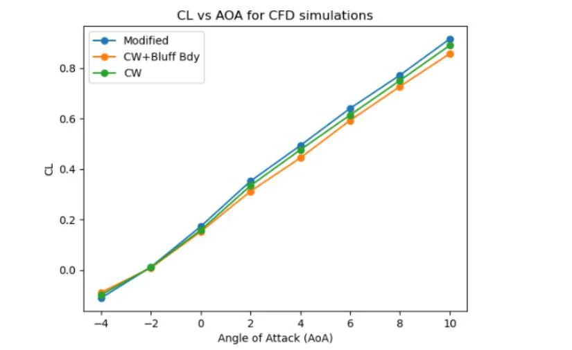
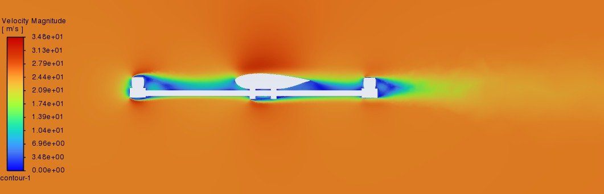

Aerospace · CFD
VTOL aerodynamic optimisation
My final-year project at Southampton, looking at how to reduce drag from VTOL wing-mounted motors and supports.

What I was trying to improve
The motor mounts and support structures increase drag on the wing. I wanted to see whether changing their shape and position would reduce that drag without affecting the lift too much.
What I did
I ran more than 25 CFD cases in ANSYS Fluent, comparing different motor-mount shapes and orientations over a range of angles of attack.


Looking at the airflow
I also compared the flow around the original and modified motor mounts. The velocity plots helped show where the mounts disturbed the flow and how that changed with the redesign.



What I found
At 0° angle of attack, my final design reduced the drag coefficient by about 15.9% compared with the earlier configuration, while maintaining a similar lift trend. I also checked the results across other angles of attack, because the improvement wasn't identical at every condition.
CFD setup and checks
I used ANSYS Fluent with a steady, pressure-based solver and a k-ω turbulence model. The inlet speed was 25 m/s at Reynolds number 4.3 × 10⁵. I compared the clean wing with the original motor-mount arrangement and the modified design.
For the clean-wing case, I ran a mesh-convergence study and selected a mesh of about 10.6 million elements. I also compared clean-wing lift and drag trends with wind-tunnel and reference aerofoil data before assessing the modified configurations.
Drag coefficient at 0° angle of attack
| Configuration | Cd |
|---|---|
| Clean wing | 0.00786 |
| Original motor mounts | 0.0153 |
| Modified motor mounts | 0.0128 |
The report gives a 15.87% drag reduction at 0°. The table uses rounded Cd values, so calculating the percentage directly from these displayed figures gives a slightly different answer.
Assumptions and limitations
The modified design still has much more drag than the clean wing because it still includes the motors, mounts and boom. Redesigning the mounts reduces the additional drag; it does not remove the extra components. I also simplified the propeller geometry, and the actual surface roughness was unknown, which limits how accurately the skin-friction contribution could be represented. The mesh-convergence study was carried out on the clean wing, not independently for every configuration.